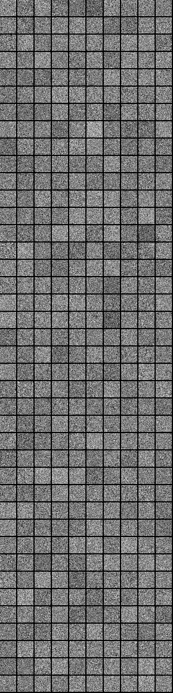

DeepLearning INTRO
This might be too much repeat or need to be merged into other section
Table of Contents
- Defining Deep Learning
Defining Deep Learning
- Higher neuron counts than in previous generation neural networks
- Different and evolved ways to connect layers inside neural networks
- More computing power to train
- Automated Feature Learning
Automated Feature Learning
- Deep Learning can be thought of as workflows for automated feature construction
- From “feature construction” to “feature learning”
- As Yann LeCun says:
- “machines that learn to represent the world”
MNist Image Learning Example
would be nice to make this a demo -
The Following Slides Show a Network as it learns features


Review of Previous Slides
These are the features learned at each neuron in a Restricted Boltzmann Machine (RBMS)
These features are passed to higher levels of RBMs to learn more complicated things.
TH- add more stuff on this
Factors influencing DeepLearning Craze
- GPU's enabling matrix-matrix computation
- Can train extremely useful networks in weeks rather than years
- More data to traing
- Can deliver enough data so that the network can learn needed patterns
- Compare it to biological networks, how much data does an infant train on before first word? A LOT !!
Recent success of Deep Learning
- Image
- Speech
- other
This needs broken out and clarified, imagenet, speech, etc
Unreasonable Effectiveness: Benchmark Records
- Text-to-speech synthesis (Fan et al., Microsoft, Interspeech 2014)
- Language identification (Gonzalez-Dominguez et al., Google, Interspeech 2014)
- Large vocabulary speech recognition (Sak et al., Google, Interspeech 2014)
- Prosody contour prediction (Fernandez et al., IBM, Interspeech 2014)
- Medium vocabulary speech recognition (Geiger et al., Interspeech 2014)
- English to French translation (Sutskever et al., Google, NIPS 2014)
- Audio onset detection (Marchi et al., ICASSP 2014)
- Social signal classification (Brueckner & Schulter, ICASSP 2014)
- Arabic handwriting recognition (Bluche et al., DAS 2014)
- TIMIT phoneme recognition (Graves et al., ICASSP 2013)
- Optical character recognition (Breuel et al., ICDAR 2013)
- Image caption generation (Vinyals et al., Google, 2014)
- Video to textual description (Donahue et al., 2014)
- Syntactic parsing for Natural Language Processing (Vinyals et al., Google, 2014)
- Photo-real talking heads (Soong and Wang, Microsoft, 2014).
Four Major Architectures
- Deep Belief Networks
- Convolutional Neural Networks
- Recurrent Neural Networks
- Recursive Neural Networks
The More Things Change…
-- need to move this from Josh, conversational style to more formal-
- Deep Learning is still trying to answer the same fundamental questions such as:
- “is this image a face?”
- The difference is Deep Learning makes hard questions easier to answer with better architectures and more computing power
- We do this by matching the correct architecture w the right problem
Choosing the Right Architecture
- Timeseries or Audio Input
- Use a Recurrent Neural Network
- Examples: Fraud Detection, Anomaly Detection
- Image input
- Use a Convolutional Neural Network
- Video input
- Use a hybrid Convolutional + Recurrent Architecture!
Common Architectural Principals
- Layer-oriented architecture
- But have different types of hidden layers
* Different schemes of connectivity - Connection weights are still parameters
- But have different types of hidden layers
- Activation functions control how information propagates from one layer to next
- Input / Output layer concepts still the same
Evolution of Layers
- Layers evolve to have different types of connections
- Classic Feed Forward Neural Network: Fully-Connected
- Convolutional Neural Network
- Connected to spatially-local areas of previous layer
- Connected to full depth of output
- Recurrent Neural Networks
- Connections from previous timesteps
The fundamental pieces of a Neural Network
- Activation function, defined per layer for all neurons in that layer, the activation function determines what output signal based on input signal.
- Loss Function, how error is calculated so that network can modify weights and train
- Optimization algorithm determine how given a specific error calculation the weights are modified
Hyper Parameters Summarized
- Layer Count
- Learning Rate
- Parameter Count
- Neurons per layer
- Loss Function Type
- Optimization Algorithm
Activation Function
- An activation function determines what output signal is generated based on the input signals.
- Borrowed concept from biological neurons where a neuron "fires" past a certain threshold.
- Some evolution has occured over time.
Activation Functions
- Sigmoid is considered a classical neural network activation function
- Fallen out of favor more recently
- Model Deep Networks use
- Rectified Linear Units (ReLU)
- TanH
Activation Functions Illustrated
Add pictures of each, describe Vanishing Gradient Problem or not
Loss Functions
Need good definition here
- Regression
- Squared Loss
- Classification
- Hinge Loss
- Binary classifier (“hard classification”)
- Hinge Loss
- Logistic Loss
- When we want probabilities as opposed to hard classifications
Optimization Algorithms
- Stochastic Gradient Descent
- Most common
- L-BFGS
- Conjugate Gradient
- Hessian Free
Hyperparameters
- Layer Count
- Learning Rate
- Parameter Count
- Neurons per layer
- Loss Function Type
- Optimization Algorithm
Building Blocks of Deep Networks
- Some networks are composed of other networks
- Use sub networks to extract features
- Example Deep Belief Networks
- Use a set of Restricted Belief Networks to extract good initial parameter values
- AutoEncoders
- Can learn to find a minimal representation of the input data
Deep Belief Network

TO DO
--add pictures of Feed Forward, LSTM, etc.